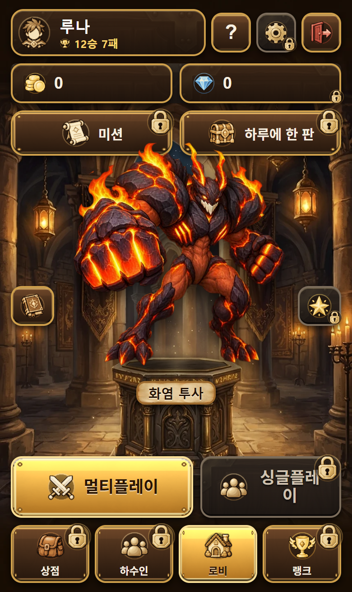
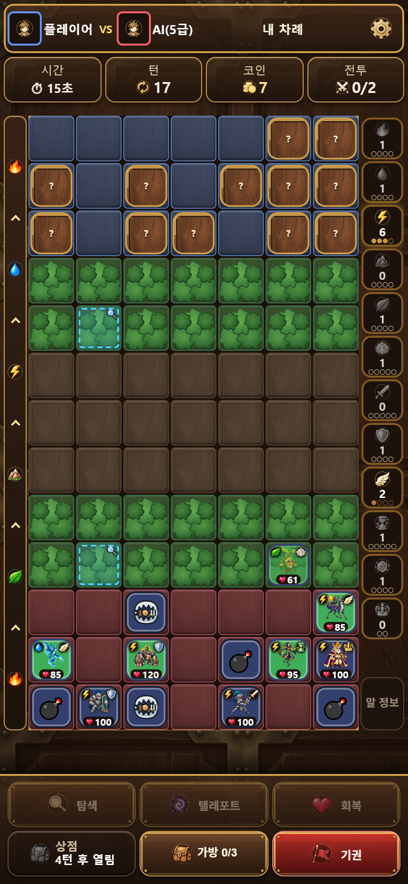
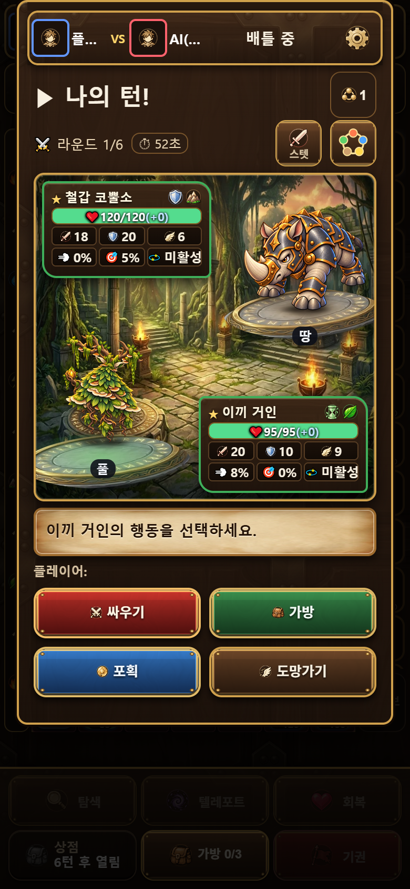

창조게임즈 회사·프로젝트 소개서
Digit-Duel과 AI 협업 개발·운영 체계
창조게임즈(CHANGJO GAMES)는 사람 결정권자 CJ와 역할별 AI Worker가 함께 데스크톱·모바일 브라우저 Web 게임 Digit-Duel을 만드는 작업용 게임 브랜드다.
| 문서 개정 | 2.1 초안 · 2026-10-28 · CJ 재QA 대기 · 이번 검수·CI 결과 |
|---|
문서 정보 · 미확정 사항 · 용어
- 브랜드: 작업용 게임 브랜드 표기다. 회사 등록·법인·상표를 확인했다는 뜻이 아니다. 회사 비전·사업 범위·다른 프로젝트 계획은 미확정이며, CJ가 확정하면 1장에 추가한다.
- 문서 성격: 앞부분 1~5장은 소개, 뒷부분 운영 원장 상세는 현황·승인·QA·인수인계 원문이다. 한 파일의 단일 정본이다.
- 파일:
docs/creat2ve/PM_BOARD.html· 파일명 유지. 세부 File Tree·파일명 이동·Markdown 추가 정리는 다음 토론 대상이다. - 이전 개정: 2.0 초안(소개 틀 추가)의 검수·CI 결과는 역사 기록이며 2.1의 PASS가 아니다.
- AI Worker: 현재 상태·업무·권위·승인과 해당 역할 절을 먼저 읽는다.
| 용어 | 이 문서에서의 뜻 |
|---|---|
| AI Orchestration | 여러 AI 작업자를 역할별로 나누고, 한 조정자가 배정·취합하는 운영 방식 |
| Worker | 한 가지 일을 맡아 실행되는 AI 세션. 결과를 PM에게 메시지로 보고한다. |
| QA · AC | 품질 검사 · 완료 조건(Acceptance Criteria) |
| CI | 코드가 합쳐질 때 GitHub가 자동으로 돌리는 필수 검사. 사람의 제품 QA를 대신하지 않는다. |
| Release · Production | 버전 번호가 붙은 정식 출시본 · 실제 이용자가 접속하는 서버. 개발 트랙 통합과 구분한다. |
1.회사·프로젝트 소개
Digit-Duel은 상대 말의 정체를 추리하며 싸우는 2인 온라인 턴제 전략 보드게임이다. 말 14개를 비밀리에 배치하고, 하수인으로 단서를 모아 속성 전투로 상대를 제압한다.



v0.4.16 개발 화면 · 미출시 · #386 README 승인 원판 · 그림을 누르면 원본
digit-duel.site 운영
#335·#386 CJ PASS
#265·#322·#323·#324
BLOCKED
2026-10-28 관측. Production은 v0.4.15 뒤 보안 수정 main이 Live다. 정확한 SHA·근거는 상세 1. 현재 상태·상세 2. 업무가 정본이다.
2.AI Orchestration Structure
CJ가 정하고, Mercury PM이 나누고, 소관 역할이 만들고, 만들지 않은 Saturn이 검사한다.
2-1. 조직도
2-2. 역할 한 줄
- CJ방향·착수·최종 QA·출시 승인. 미확정 기획·운영 자원·결제 결정
- Mercury PM접수·배정·Git·현황·인계. 구현·기획 결정·QA 판정은 대행 않음
- Venus기획·규칙 의미·문서 집필. 코드·Git 쓰기 없음
- Earth아트·자산·UI 시각 설계. 코드는 Mars로 전달
- MarsWeb 클라이언트·빌드·툴링·테스트. 서버 구현 없음
- Jupiter서버·DB·Table 스키마. Table 의미·수치는 Venus·CJ
- Saturn파일 무수정 독립 QA. 판정은 PM에게 메시지
- Argon팀 밖 외주 미술. 고정 역할·역할 모델 대체 아님
2-3. 구조를 지키는 규칙
- 역할을 먼저 정하고 승인 모델을 배정한다. 빈 슬롯을 다른 역할이 대신하지 않는다.
- 만든 역할은 자기 작업을 판정하지 않는다. 정식 QA는 Saturn과 CJ의 몫이다.
- Git 쓰기는 PM만 한다. Worker는 결과·검사·한계·증거 링크를 PM에게 보내고, PM이 이 문서의 기존 항목을 갱신한다.
- 한 파일은 한 시점에 한 담당만 편집한다.
권한 원문: 상세 3. 팀·Mercury PM 역할
3.구현 방법
일 하나는 일곱 단계를 거치며, 분홍색 CJ 확인 지점을 지나야 다음 단계로 간다. 단순 지시는 바로 수정·검증한다.
3-1. 한눈에 보는 흐름
- CJ 접수CJ → Mercury PM · 단순 지시는 바로 수정·검증
- 범위 · 기획Mercury PM · Venus · 범위·AC·배정 기록 CJ 방향 결정 · Work Start
- 소관 구현Earth · Mars · Jupiter · Git 쓰기 없이 결과 전달
- Saturn 독립 QASaturn → Mercury PM · 파일 무수정 검사 REVISE면 3단계로
- CJ QACJ · CI·Saturn PASS로 대체 불가 CJ QA PASS
- Git · CI · 출시 승인Mercury PM · PR·필수 CI 6개·Release CJ 통합 · 출시 승인
- 운영Mercury PM · CJ · 현황 갱신·예약 감시 CJ 운영 자원 결정
3-2. 단계별 핵심
- 배정: 역할·작업 공간·기준 ref·파일 범위·보존 조건·필수 검사를 기록한다. 기획이 불명확하면 Venus가 [기획 필요]로 보고한다.
- 통과는 서로 대신하지 않는다: 필수 CI 6개, Saturn PASS, CJ QA PASS는 별개다. Saturn은 승인 모델 게이트를 통과한 결과만 정식 QA다.
- 통합 ≠ 출시: 이슈 브랜치 → milestone → dev → main. Release·Production 배포는 CJ 승인 범위다. Issue는 AC·통합·CJ 승인 확인 뒤 닫는다.
- 운영: PM이 현황을 갱신하고 Orca 예약으로 서버·백업 검증을 감시한다. 운영 자원·결제는 CJ가 정한다.
세부 규칙: 상세 4. 권위·승인·Git · 상세 5. QA 원칙
3-3. 실제 산출물: #335 UI·미술·FX CJ PASS · CLOSED




v0.4.16 개발 화면 · 미출시 · #335 하수인 미술 반영 · 그림을 누르면 원본
- #335 Issue 범위·AC
- 하수인 미술 33종 · 4번 대표기 FX 33종 제작
- Saturn REVISE·재검증
- CJ QA PASS
- PR336 dev 통합 · 정식 출시는 별도 판단
3-4. 한계
- AI는 방향·착수·출시·운영 자원·결제를 결정하지 않는다.
- 공유 QA 서버는 DB 없는 게스트 환경이다. 실제 회원·SMTP·영구 전적 E2E를 지원한다고 보고하지 않는다.
- 사용량 절감률·모델 우열은 동일 조건 측정 전에는 쓰지 않는다.
4.AI Model · Tool · Skill
모델은 생각하는 AI 엔진, 도구는 엔진이 다루는 프로그램·서비스, 스킬은 같은 일을 같은 방식으로 하게 하는 작업 지침이다.
- 역할 Venus
- 모델
claude-opus-5-5 / high - 도구 Claude Code · Orca
- 스킬 eli-adult
- 이 HTML
- PM 검증 → CJ 승인
4-1. 모델 ↔ 담당
gpt-6.1-sol / xhigh
Mercury PM · Saturn
claude-opus-5-5 / high
Venus · Mars · Jupiter
gpt-6-astra / medium
Earth 신규 자산
gpt-6-luna / xhigh
Earth 기존 자산 수정
CJ 승인 배치(2026-09-30 모델·effort, 2026-10-13 GPT Fast)이며 우열 평가가 아니다. priority는 설정값이고 실제 API 처리 tier는 미관측이다. 정본은 worker-models.json·모델·실행 확인이며, 불일치는 자동 대체 없이 보고한다.
4-2. 도구 → 쓰는 곳
| Orca | AI 에이전트 실행·관리 앱 → Worker 기동·작업 공간, 배정·보고 메시지, #282 예약 |
|---|---|
| Codex · Claude Code | 터미널 에이전트 실행기 → 역할별 Worker 실행 |
| Git · GitHub | Issues·Milestones·PR·Actions(CI)·Releases → 계획·AC·통합·필수 CI·정식 출시 |
| Render | 웹 호스팅 → Production(digit-duel.site)·공유 QA 서버 |
| Notion | 문서 협업 → GDD 등 기획 원본(Venus 관리) |
4-3. 스킬 → 행동 원칙
eli-adult
처음 읽는 성인 기준: 정확한 용어, 실제 구조 도해, 미확정은 미확정으로 표기
ponytail
과잉 구현을 줄인다. 보안·접근성·필수 검증·역할 경계는 줄이지 않는다. Venus는 기술 기획 검토 때만 lite, Earth 순수 아트 미적용, 절감률 미측정
orchestration
PM 배정, Worker 질문·완료 보고를 메시지로 주고받는 Orca 절차
imagegen
새 래스터 이미지를 원본을 보존하며 제작. 유료 API는 CJ가 명시 선택한 범위
도구·스킬의 세부 분류와 추가 목록은 다음 토론에서 확정한다. 역할별 모델·effort·Skill 배치는 이미 승인된 실행 계약이다.
5.이 문서의 작성·관리 책임
- Venus 집필·큰 개편
- Mercury PM 사실 검증·현황·Git 최종 반영
- 소관 역할 자기 영역 기술 사실 확인
- Saturn 파일 무수정 읽기 검수
- CJ 최종 승인
- CJ 승인 · 2026-10-28: 이 분담이 이전의 'PM만 정본을 갱신' 문구를 이 범위에서 대체한다. Venus는 문서 HTML만 쓰며 앱 기능(Mars 소관)·Git 쓰기는 하지 않는다. PM은 기획 결정·독립 QA 판정을 대체하지 않는다.
- 같은 파일을 여러 담당이 동시에 편집하지 않는다. 새 보고서·로고·브랜딩 자산은 만들지 않는다.
- 2.1 상태: Venus 집필 완료 · CJ 재QA 대기 · 이번 검수·CI 영수증. 이 판은 PR391 검토본이며 CJ 재QA 전까지 root·milestone 정본은 기존 판을 유지한다. 상세 10. 이번 전환 결과의 PASS는 이전 전환의 기록이다.
운영 원장 상세
아래는 Mercury PM 운영 원장의 원문이다. 현황·승인·Git·원본 보존·인수인계·증거 기록을 접어서 보존하며, 각 절의 고정 앵커(#current, #work, #team, #runtime 등)는 그대로다.
- 절마다 '원문 펼치기'를 누르거나 목차 링크로 이동하면 원문이 펼쳐진다. 인쇄할 때는 모두 펼쳐진다.
- 원문 수정은 최신 CJ 승인과 충돌하는 표제·문서 쓰기 책임의 정정에 한했다.
상세 1.현재 상태 · Mercury PM 운영 원장
원문 펼치기 · 현재 상태 · 팀 운영 · 승인 범위 · 인수인계
| 관리 책임 | Mercury PM · CJ 2026-10-28 직책 전환 결정 |
|---|---|
| 문서 개정 | 1.0 · 2026-10-28 · 2026-10-28 15:41 KST (운영 원장 전환). 현재 개정은 표지를 따른다. |
| 정본 경로 | C:/Users/pc_77/orca/Digit-Duel/docs/creat2ve/PM_BOARD.html |
| Git 보관 | milestone/v0.4.16의 docs/creat2ve/PM_BOARD.html. 원본 root의 HEAD가 최신 문서의 기준이라는 뜻은 아니다. |
| 이번 자료 기준 | 개발 트랙 6c495b4f01ffb72b4caba8c05384dc61a42f57bb와 아래 개별 관측. 이 값은 문서 자체의 최종 커밋 SHA가 아니다. |
지금의 판단
- 최신 정식 Release는 v0.4.15. Production은 보안 수정 main
f4bfd29가 Live다. - #335 미술 33종·대표기 FX 33종과 #386 README는 CJ QA PASS·CLOSED. 개발 트랙 반영과 Production 출시는 구분한다.
- 공유 QA는 CJ가 검사한
c83fc03배포를 유지한다. 소스 브랜치만milestone/v0.4.16으로 정렬했다. - v0.4.16의 싱글플레이·튜토리얼 4건은 Work Start 대기. #282 신규 백업 검증은 BLOCKED.
- 현황과 인계는 이 HTML에서 갱신한다. 과거 PD 보고서는 당시 증거이며 현재 지시로 재활성화하지 않는다.
2026-10-05
#335 승인 범위
#265·#322·#323·#324
44건 처리 이력 보존
출시·개발·배포를 분리한 상태
| 대상 | 확인 내용 | 근거·관측 범위 |
|---|---|---|
| 정식 Release | v0.4.15 · 태그 대상 1f79d4e0042018dd576a82025d0dc9ccbed0a9f1 | GitHub Release·태그. 보안 수정 뒤의 main과 출시 태그를 혼동하지 않는다. |
| Production | digit-duel.site · Livesrv-daj498mq1p3s73a31s3gf4bfd2920cfb90af61c830451d3f936df92f6a6e | 2026-10-28 Render Dashboard 읽기 확인. 기존 보안 수정 배포 dep-dbglq9o1ockc738gfoig 영수증 보존. 이번 문서 작업에서 health·계정·SMTP·제품 E2E를 재검사하지 않았다. |
| 개발 dev | a1fa420bbd5b39b7d179233297b9ef78ef0b889b#335 PR336 통합 | Git 원격 ref·PR·전체 tree 대조. #335의 Production 반영 완료로 해석하지 않는다. |
| v0.4.16 | milestone/v0.4.16문서 전환 전 기준 6c495b4f01ffb72b4caba8c05384dc61a42f57bb | #335 통합 내용과 #386 README·사진·승인 상태 반영. 이번 문서 PR의 결과는 전환 결과에서 관리한다. |
| 공유 QA | digit-duel-mipa-qa.onrender.com · Livesrv-dauvf1m0tbcc73ctepsg실제 배포 c83fc03c94db47987b4bd627592bd84a513e745c | 2026-10-28 Dashboard 읽기 확인. 소스 milestone/v0.4.16 · Free · Auto-Deploy Off · PR Preview Off. 소스 변경 뒤 새 배포는 호출하지 않았다. |
상세 2.업무·미결 사항
원문 펼치기
| 업무 | 현황 | 다음 행동·게이트 |
|---|---|---|
| #335 UI·미술·FX | CJ PASS · CLOSED PR336 → dev a1fa420. 미술 33종과 4번 대표기 FX 33종. | 기존 REVISE·초기 실패·재검증 증거 보존. 완료된 양산·QA·CI를 재시작하지 않는다. UI/아트의 정식 출시·Production 배포는 별도 릴리스 판단 대상이다. |
| #386 README | CJ PASS · CLOSED PR387·388·389. 로그인·로비 전체 화면 원판 복구 및 상태 정정 완료. | 승인 대상은 v0.4.16 개발 트랙 README. main README 변경 승인으로 확대하지 않는다. |
| v0.4.16 milestone20 | OPEN · 착수 대기 4건 #265 싱글플레이 UI System Flow #322 무제한 AI #323 왕국 9단계 PVE #324 튜토리얼 System Flow | Concept Conti·상세 기획·튜토리얼 분석과 제품 구현은 별도 CJ Work Start 전 시작하지 않는다. #322·#323은 #265 하위, #324는 독립 이슈다. |
| Dependabot #338~#381 | 44건 처리 · 열린 경고 0 PR383 보안 수정 main 반영. 경고 0은 2026-10-28 API 조회 결과다. | 수정·CI·독립 QA 이력은 보존한다. 이번 문서 작업으로 보안 테스트를 새로 통과했다고 보고하지 않는다. |
| #282 운영 백로그 | 신규 주간 백업 BLOCKED 마지막 주간 검증: 2026-10-26 09:00~09:04 KST. | 이번 주 신규 export·암호화된 off-Render 보관·신규 SHA-256·최근 4주 보관 증거 부족. CJ가 준비할 운영 항목이며 예약은 백업 생성 작업이 아니다. 9월 28일 보관본·당시 복원을 신규 PASS로 쓰지 않는다. |
| 문서 시스템 전환 | HTML 정본·PM 직책·현재 계약 통합·원본 보존 검증 완료. Git 통합의 실행 결과는 아래 PR·영수증을 따른다. | 이 원장의 전환 결과 한 곳에서 관리한다. 다음 PM의 실제 full ownership handoff는 CJ의 후속 지시 대상이다. |
#282 예약 4개
2026-10-28 Orca 조회에서 모두 enabled·상설 원본 root 대상·fresh 세션이다. 다음 시각은 이 관측 시점의 값이며 실행 때 다시 확인한다.
| 예약 | 주기·다음 일정 KST | 보존할 제약 |
|---|---|---|
| readyz 감시 | 매 5분 · 정상 사전 검사면 skipped_precheck | 기존 사전 검사와 실행 범위 유지. 장애 보고가 제품 E2E PASS를 뜻하지 않는다. |
| 주간 백업 검증 | 매주 월요일 09:00 · 다음 2026-11-02 | 신규 export·해시·암호화 외부 보관·4주 보관을 증거로 확인. 없으면 BLOCKED. |
| 월간 격리 복원 | 매월 29일 09:00 · 다음 2026-10-29 | 별도 빈 로컬 PG18에서만 검증. Production 복원·요금제 변경 금지. |
| 비윤년 2월 예외 | 비윤년 2월 28일 09:00 · 다음 2027-02-28 | 윤년 사전 검사와 기존 주기 유지. 정규 29일 월간 일정의 예외다. |
예약의 읽기 진입 경로와 PM 표기만 이번 문서 체계에 맞춰 갱신한다. trigger·사전 검사·enabled·fresh·대상 workspace·운영 행동은 변경하지 않는다. 수동 실행하지 않는다.
상세 3.팀·Mercury PM 역할
원문 펼치기
PM은 CJ 접수 창구, 범위·일정·완료 조건 조정, GitHub·Orca 메타데이터, 문서 정본과 인수인계를 관리한다. 직책 변경은 제품 구현·기획 결정·독립 QA를 PM이 대행한다는 뜻이 아니다. 기존 역할 식별자 Mercury는 유지하며 과거 Mercury_PD는 역사·호환 표기다.
| 역할 | 책임·허용 변경 | 경계 |
|---|---|---|
| CJ | 방향성·착수·최종 제품/미술 QA·출시 승인 | 미확정 기획·운영 자원/결제 등의 결정권자 |
Mercury PMCOORDINATION_GIT_DOC_METADATA | 조정·Git·문서·메타데이터 | 제품·런타임·빌드·도구·테스트 코드 구현, 기획 결정 대체, 독립 QA 판정 대체 금지. 문서형 HTML은 문서 범위다. |
VenusPLAN | 기획서·규칙 의미·Notion 기획 관리·설명/소개 문서 집필 · docs | 제품·도구·테스트 코드 및 Git 쓰기 금지. 기획의 본문과 Decision Log를 함께 갱신. |
EarthART | 아트·자산·UI 시각 설계 · assets/docs | 제품/도구 코드 구현·기획 결정 대체·Git 쓰기 금지. 정확한 기존 벡터/픽셀 자산은 편집 원본 재사용. |
MarsCLIENT_TOOLING | Web/클라이언트·빌드·툴링·테스트 구현 · code/docs | 서버 구현, 기획 결정·독립 QA 대체, Git 쓰기 금지. |
JupiterSERVER | 서버·DB·Table 스키마/검증 · code/docs | 클라이언트/툴링 구현, 기획 결정·독립 QA 대체, Git 쓰기 금지. Table 의미·수치는 Venus/CJ 소관. |
SaturnREAD_ONLY_QA | 파일 무수정 독립 QA · mutation none | 제품·테스트·보고서를 포함한 모든 파일 쓰기와 Git 쓰기 금지. 판정·재현·한계는 메시지로 PM에게 전달. |
전달·조정 원칙
- CJ Comment를 결정·피드백·질문으로 분류하고, 승인된 범위만 구체화한다. 단순 지시는 필요한 수정·검증으로 바로 진행한다. 복합 안건은 소관 분석 → PM 취합 → CJ 방향 결정 → 구현 → Saturn 검수 → CJ QA → 정리 순서다.
- 역할을 먼저 정하고 모델을 배정한다. 공급자나 빈 슬롯을 이유로 다른 역할이 대신하지 않는다. 같은 역할이 병렬이면 모두
Role_1,Role_2처럼 안정된 접미사를 쓰고 기본 이름과 index 1을 중복 배정하지 않는다. - dispatch에는
required_role / mode / area / mutation / instance_index, 정확한 workspace·기준 ref/SHA·파일 범위·보존 조건·완료 기준·필수 검사와 기본 1회 제한을 기록한다. 역할·경로가 어긋나면role_scope_mismatch로 거부한다. - 산출물은 workspace 상대 경로다. 상위 이동·절대/드라이브/UNC/URL 경로·중첩 퍼센트 인코딩·끝점/공백 세그먼트·제어/유니코드 구분자·금지 문자·실행/코드 마커가 숨은 자산 파일명을 허용하지 않는다. 거부된 결과를 완료로 기록하지 않는다.
- Worker는 결과를 판정·변경 파일·검사·미해결·증거 링크로 짧게 전달한다. 같은 현재 상태를 적는 역할별 Markdown 보고서를 새로 만들지 않는다. PM이 이 HTML의 해당 항목을 갱신한다. 기계 로그·원본 영수증은 별도 증거로 보존한다.
- 독립 안건은 fresh Worker가 기본이다. 완료 출력과 실제 종료를 확인해 보관·release한다. retained 역사행·과거 handle·이전 runtime을 현재 Worker로 오인하지 않는다. 사람이 소유한 터미널을 임의 종료하지 않는다.
모델·실행 확인
아래는 CJ 승인 실행 계약이다. 기계가 읽을 모델/effort 정본은 worker-models.json이다. Orca가 이 JSON을 자동 적용한다고 가정하지 않으며 PM이 명시 기동 인수와 실제 실행을 대조한다.
| 담당 | agent / model / effort | tier·Skill |
|---|---|---|
| Mercury PM | codex / gpt-6.1-sol / xhigh | Fast priority · Ponytail full |
| Venus | claude / claude-opus-5-5 / high | eli-adult 필수. 기술 기획의 YAGNI 검토에만 Ponytail lite 병행. |
| Earth 신규 / 기존 수정 | codex / gpt-6-astra / mediumcodex / gpt-6-luna / xhigh | GPT Fast priority. 순수 아트에는 Ponytail 의무 적용 없음. |
| Mars / Jupiter | claude / claude-opus-5-5 / high | Ponytail full |
| Saturn | codex / gpt-6.1-sol / xhigh | Fast priority · Ponytail full |
- Digit-Duel의 승인된 작업은 full access·무확인 실행이다. Codex
danger-full-access / approval never, Claude는 해당 명시 인수로 시작한다. 계정 전역·다른 프로젝트의 모델·권한·hook 신뢰를 바꾸지 않는다. managed/host 정책 우회 승인이 아니다. - Fast는 2026-10-13 CJ 지시다. 설정과 화면의
priority를 실제 API 처리 tier의 관측으로 쓰지 않는다. 현재 API 처리 tier는 미관측이다. - 입력 전 프롬프트 창인지 확인하고 모델 전환 팝업을 먼저 처리한다. 시작·현재 턴·GO 직전·완료 시 모델/effort/tier/권한·footer·현재 turn_context·응답 성공을 대조한다. 이전 preflight를 재사용하지 않으며 requested/effective null은 그대로 기록한다.
- 설정 저장, 실행 인수 전달, 제공자의 실제 응답 성공을 분리한다. 불일치·접근 오류는 자동 모델 대체 없이 보고한다. 불일치 결과는 진단 근거만 보존하고 승인 모델의 fresh QA로 필요한 범위만 재검사한다.
- Ponytail은 설치된 스킬의 full 규칙을 읽고 적용한다. PM에서 관측한 설치 경로는 5.3.2다. 다른 provider의 설치 버전은 따로 확인하며 과거 4.10.0 기록을 현재 설치 버전으로 재사용하지 않는다. 보안·접근성·필수 검증·역할 경계는 줄이지 않는다.
- 확정 문장 정리용 Haiku 4.5의 기존 예외 외에 고정 역할 배치를 자동 대체·상향하지 않는다. 사용량 절감률은 대표 작업의 동일 조건 측정 전 주장하지 않는다.
Earth의 이미지·납품 규칙
대화 모델과 이미지 생성 엔진은 별개다. 기존 SVG·아이콘·로고·버튼·9-slice·정밀 픽셀 그리드는 편집 원본을 재사용한다. 새 배경·캐릭터·질감 등 래스터가 필요한 경우 설치 imagegen 스킬에 따라 원본을 보존하며 제작한다. 특정 이미지 모델 버전 사용은 실제 지정 경로·영수증을 확인한 경우에만 보고한다. API/CLI 유료 경로는 CJ가 명시 선택한 범위에서만 사용한다.
실제 게임 크기의 실루엣·팔레트·투명 가장자리·가독성·출처·라이선스·원본/내보내기를 확인한다. 화면 문구·서버 상태·잠금·비공개 정보 가림은 이미지에 굽지 않고 실행 계층이 처리한다. 코드·도구가 필요하면 Mars로 라우팅한다.
상세 4.권위·승인·Git 규칙
원문 펼치기
최신 CJ Comment → 이 HTML의 승인 운영 계약 → 해당 영역의 원본 순서로 해석한다. AGENTS.md와 CLAUDE.md는 이 문서로 연결하는 기동 진입 파일이다. 제품 규칙은 GDD, 모델/effort 값은 worker-models.json, 실제 구현·배포 상태는 Git·CI·Render 원본으로 확인한다. 원본과 이 문서의 요약이 다르면 재조회해 요약을 정정하며 확인하지 않은 쪽을 PASS로 쓰지 않는다.
| 영역 | 원본 | 관리 |
|---|---|---|
| 현황·PM 인수인계·운영 계약 | 이 HTML | Mercury PM · 상태 전환 때 기존 항목 치환. 소개 장 집필·큰 개편은 Venus(5장) |
| 게임 규칙 | GDD-13 · GDD-23 · GDD-24 | Venus · CJ 결정 시 본문과 Decision Log 함께 갱신 |
| 계획·AC·종결 | GitHub Issues · Milestones | Mercury PM · 기존 본문/체크박스를 갱신. 신규 Issue 댓글 금지. |
| 구현·검증·출시 | 명시 ref/SHA · Actions · Releases | 실행 결과와 영수증. 미출시 통합을 정식 출시로 쓰지 않음. |
| 실행 설정 | worker-models.json · 프로젝트 설정·현재 turn_context | Mercury PM · 승인값과 실제 관측 분리 |
| 범용 구조 | Notion 구조 정의 · 범용 핸드북 보관본 | Digit-Duel 최신 CJ 결정이 우선한다. 범용 원본·다른 프로젝트에 PM 전환을 자동 전파하지 않음. |
승인·기획·외부 시스템
- 범위가 불명확한 기획은 확정/추론/미확정을 구분해 [기획 필요]로 보고한다. CJ의 승인 없는 제품 착수·새 기능·미정 Table 수치를 임의 결정하지 않는다.
- Venus는 Notion 기획서를 관리한다. Project·실제 수정일·실제 사람 Editor를 사실대로 기록하며 Agent를 person으로 만들지 않는다. 다른 Worker는 허가 없는 GitHub/Notion 쓰기를 하지 않는다.
- Notion의 Archive는 삭제가 아니다. 프로젝트 일치·대체/중복·참조 관계를 확인하고 연결된 문서를 무단 삭제하지 않는다. 이번 작업의 Markdown 정리는 로컬/저장소 문서 범위이며 Notion 삭제 승인이 아니다.
- DB·계정·SMTP·결제·도메인·요금제와 다른 사용자 프로세스를 보존한다. 새 유료 자원·Production 복원·배포는 별도 승인 범위다. 이미 승인된 가역 작업의 진행 허가를 반복 질문하지 않는다.
- 현재 대상은 데스크톱·모바일 브라우저 Web이다. Roblox 분석·구현·검토는 제외한다. 다른 소유자의 트랙과 Unity 원본은 보존하며 새 작업을 시작하지 않는다.
브랜치·PR
- 일반 흐름: 이슈 브랜치 → squash →
milestone/vX.Y.Z→ merge commit →dev→ merge commit →main+ tag/Release. 보호 main·dev·트랙에 직접 커밋하지 않는다. 트랙은 dev에서, 이슈 브랜치는 해당 원격 트랙에서 분기한다. - 마일스톤 없는 저장소 전반 개발 작업은 origin/dev, 출시본 긴급 hotfix는 origin/main 기준이다. hotfix의 main 반영 뒤 dev 역병합과 활성 트랙 동기화까지 확인한다. rebase merge·force push·보호 완화로 검사를 우회하지 않는다.
- 브랜치명은
feature/·fix/·infra/·doc/와 작업 식별자를 쓴다. 제목·본문은 한국어와 scope를 사용하고 코드/자산 변경은 납품 목표별 Issue 1개·통합 PR 1개로 관리한다. 문서/운영 결정만으로 역할별 Issue를 증식시키지 않는다. - PR에는 범위·변경 파일·AC·검증·Saturn 판정/미검증·필요한 화면·rollback을 기록한다. required CI 6개를 유지한다. 다른 트랙의 추가 보호 조건은 임의 변경하지 않는다. CI 성공을 CJ 제품 QA나 독립 Saturn 판정으로 대체하지 않는다.
- Issue 종결은 모든 AC·통합과 CJ 승인을 확인한 뒤 기존 본문을 갱신해 수행한다. 최신 명시 승인과 허용된 기존 묵시 승인 계약을 적용하며 신규 댓글을 쓰지 않는다.
- 병합 뒤 불필요한 로컬/원격 작업 브랜치는 보관·참조·배포 의존성을 확인해 PM이 명시 삭제한다. 장수 dev까지 삭제할 수 있는 전역 자동 삭제 옵션은 켜지 않는다. 과거 tag·Release·보호 설정과 다른 소유자 자료를 보존한다.
사용자 원본 root와 정리 상태
상설 PM 원본: C:/Users/pc_77/orca/Digit-Duel
WorkTree ID: 003dc8a0-372c-4547-9290-31d34edd82be::C:/Users/pc_77/orca/Digit-Duel
9b306bbfda103263cb2feea90fd9c89527eb9290에 의도적으로 남아 있다. 과거 “main=origin/main” 규칙으로 pull/reset/checkout/stage/commit하지 않는다. 현재 문서만 승인된 범위에서 갱신하고 제품·index·stash·unity/를 보존한다.원본 stash 9ebd041242f61e10906ae388e8037c03c33ad386, cc644636b67788727963b2158001bc66cb40fe86를 보존한다. 문서 전환 전 index SHA-256은 ae33f3277a6341aa22cdf847155c9cfd3ce27de4228a2cc204224af07b339707이다. 현재 문서 전환은 승인된 문서 delta이며 과거 dirty 상태와 혼합해 commit하지 않는다.
유지할 장수 원격은 main·dev·milestone/v0.4.16·v0.5.0·v0.6.0이다. 옛 v0.4.13/v0.4.14 트랙·PD handoff 브랜치와 완료 #335/구 QA 브랜치는 CJ 승인 뒤 백업·삭제했다. Git/Orca 제품 작업 공간은 원본 root와 사람이 소유한 README 작업 공간을 보존한다. 이번 문서용 임시 브랜치/작업 공간은 통합·보관 뒤 정리한다.
화면에 남았던 issue-335-art-cohesion-pilot-intake-20261021은 Git 브랜치가 아닌 artifact 폴더 등록이었다. 등록과 저장된 화면 정보만 제거했고 실제 2,975개 파일의 전후 SHA-256 일치를 확인했다. 검수 폴더 자체를 삭제하지 않았다.
상세 5.QA 운영 원칙
원문 펼치기
- AC와 변경 위험으로 최소 검증 목록을 먼저 정한다. 기존 자동 테스트·헤드리스 회귀·코드/문서 대조를 우선하고 같은 검사를 여러 도구로 반복하지 않는다.
- 통과한 검사는 관련 수정·실패·새 위험이 있을 때만 다시 실행한다. 명령 출력과 종료 코드를 같은 실행에서 수집한다. 검사 수나 기대값을 낮춰 PASS를 만들지 않는다. 필수 CI와 필요한 회귀는 유지한다.
- Saturn은 파일 무수정 독립 QA다. 잘못된 테스트도 직접 고치지 않고 REVISE로 구현 부서에 돌려보낸다. 현재 모델 게이트를 통과한 결과만 정식 QA로 분류한다.
- 브라우저 직접 조작은 자동 검사로 확인할 수 없는 대표 시각·입력에 제한한다. 네트워크 계약 변경·구체적 회귀 근거가 없으면 수동 네트워크 매트릭스·장시간 시뮬레이션·기존 릴리스 전수를 반복하지 않는다.
- UI 전면 변경은 승인 이미지와 실제 렌더·배치·아이콘/텍스트 비중·아트 누락을 비교한다. 기능 회귀만으로 시각 일치 PASS를 쓰지 않는다. 대표 흐름·자산 대응표·검증 한계를 기록한다.
- 인증 QA는 실제 실행 주소에서 로그인·쿠키 보안 속성·인증 WSS 같은 해당 변경의 대표 경계를 검사한다. healthz/readyz·익명 401을 실제 로그인 성공으로 쓰지 않는다. 이미 같은 코드에서 통과한 경로는 근거를 명시해 재사용한다.
- 실행 횟수는 기본 1회다. 실패를 수정한 경우 관련 검사만 재실행하고 원인·횟수·최종 결과를 구분한다. 중단 조건·반복 제한 위반은 즉시 회수하고 무의미한 상태 조회를 겹치지 않는다.
- 보고는 판정·파일·검사·미해결·증거 링크 5항목을 기본으로 한다. 최초 실패·재검증·SKIP·미검증을 보존하고 새 PASS로 소급하지 않는다. 실제 사용량 미측정 상태에서 절감률을 주장하지 않는다.
README·릴리스 문서
플레이어에게 게임 경험·기능·실행 순서를 설명한다. 내부 QA·조정 이력은 이 원장과 증거 링크로 연결한다. 버전·지원 환경·사진·캡션·출시일은 실제 승인 대상과 일치시킨다. 현재 #386의 개발 화면은 승인된 8장과 전체 화면 원판을 유지하며, 과거 “튜토리얼 10장 필수”를 현재 사진 검증 기준으로 재사용하지 않는다. 과거 Release/tag/SHA/게시일은 소급 변경하지 않고 계정·접속 코드·비밀은 기록하지 않는다.
상세 6.PM 인수인계
원문 펼치기
현재는 문서 체계 전환 작업이다. CJ의 다음 인수인계 지시 전 새 PM 세션을 기동하거나 소유권을 넘기지 않는다. 다음 인수인계는 이 절을 읽고 현재 값을 독립 확인한다.
필독 범위를 고정한다
AGENTS.md 또는 CLAUDE.md → 이 HTML의 현재 상태·업무·팀·승인·QA·인계 → worker-models.json을 읽는다. 필요한 제품 기획과 원본 증거만 따라간다. 과거 전체 대화와 수백 개 보고서를 필독으로 복제하지 않는다.
실제 실행 설정을 확인한다
현재 argv·/status·현재 turn_context의 model/effort/sandbox/approval, Fast 설정·화면을 각각 확인한다. 요청·설정·유효 실행·API 처리 tier를 구분하고 미관측/null을 그대로 보고한다. 자동 모델 대체·계정 전역 변경·새 hook trust·CLI 설치 업데이트를 수행하지 않는다.
Git·원본을 확인한다
fetch origin 후 실제 원격 ref와 이 원장의 관측값을 대조한다. 원본 root의 의도적 과거 HEAD·제품 파일·index·stash·unity/를 보존한다. 문서 기준의 상대 경로를 원본 제품의 출시 기준으로 오인하지 않는다. 신규 PM 전용 WorkTree/브랜치를 만들지 않는다.
필수 연결을 독립 확인한다
Notion과 Render를 최소 read-only 1회 확인한다. Render MCP 미노출/인증 제한이면 그 사실을 기록하고 기존 Dashboard에서 확인 가능한 범위를 구분한다. 승인된 My Workspace를 다시 묻지 않으며 Slack·Google·Unity를 새 연결하지 않는다. 접근 제한 때문에 완료된 배포/QA를 재시작하지 않는다.
현재 상태를 설명하고 제한을 보고한다
최신 Release·실제 Production SHA·개발 트랙·QA 소스/실제 배포·닫힌 #335/#386·착수 대기 4건·#282 BLOCKED·다음 예약을 자기 말로 설명하고 현재 원본과 일치시키며 CJ에게 간결히 보고한다. 인수 보고를 근거 없는 전체 QA PASS로 쓰지 않는다.
full ownership을 종료·인수한다
송신은 실제 인계 전달의 accepted:true 또는 launch 전달 영수증을 보관하면 중단한다. 수신자 응답·worker_done·GO를 요청하거나 기다리지 않는다. 수신자는 독립 확인 후 CJ에게 보고한다. 전달 증거와 독립 인수 완료는 별개다. 새 PM을 과거 orchestration run에 바인딩하지 않는다.
연결 관측
| 연결 | 2026-10-28 관측 | 한계 |
|---|---|---|
| Notion MCP | GDD-13 및 Creat2ve 구조 페이지 fetch 성공 | GDD-13 제목 v0.4.10은 이력, v0.4.15 완료 단락 확인. 최종 수정 2026-10-05. 구조 원본 최종 수정 2026-09-25. 둘 다 formal unverified이며 이번 프로젝트 PM 전환을 글로벌 원본에 반영했다고 주장하지 않는다. |
| Render | 기존 GitHub 로그인으로 Dashboard 접근. Production Live f4bfd29와 QA Live c83fc03·소스 milestone/v0.4.16 확인. | 현재 세션에 native Render MCP 도구는 미노출이다. Dashboard 조회를 MCP 성공으로 보고하지 않는다. 실제 계정/SMTP·건강 검사 재실행 없음. |
| Workspace | 승인된 tea-daj3p25g1s2s739al7q0 | 재선택·재승인·연결 설정 변경을 임의 반복하지 않는다. |
상세 7.문서 갱신·정리
원문 펼치기
하나의 현재 상태
이 HTML이 회사·프로젝트 소개와 현황·승인·운영 계약·PM 인계의 유일한 편집 원장이다. 과거 자료와 실행 설정까지 하나의 거대한 본문으로 합치지 않는다. 문서 이름을 날짜별·역할별로 늘리는 대신 기존 항목을 갱신한다.
- 쓰기 책임: 2026-10-28 CJ 승인에 따라 Venus가 소개서 집필·큰 개편을, PM이 지속 현황 갱신·사실 검증·Git 최종 반영을 맡는다. 소관 역할은 기술 사실을 확인하고 Saturn은 파일 무수정으로 읽기 검수하며 CJ가 최종 승인한다(5장). Worker와 CJ의 피드백은 입력이며 결과·한계·원본 링크를 대조한 뒤 반영한다. 같은 HTML을 여러 Worker가 동시에 덮어쓰지 않는다.
- 항목 갱신: 고정 section ID와 Issue 행을 유지한다. 상태·판정·확인 시각·증거를 함께 치환한다. 요약과 상세가 같은 사실을 말할 때 함께 확인하고 같은 작업의 현재 상태를 새 Markdown에 복제하지 않는다.
- 저장: 정본 파일을 직접 편집·저장하고 다시 읽어 내용과 렌더를 확인한다. 브라우저는 읽기·인쇄 용도다. 편집 상태를 localStorage에 저장하거나 다운로드 사본을 정본으로 자동 간주하지 않는다.
- 기록: 중요한 CJ 결정과 최종 정정만 아래 변경 이력에 짧게 남긴다. 상세 최초 실패·재검증·CLI 영수증은 원본 파일로 보존하고 링크한다.
- 읽기: AI는 처음에 현재·업무·승인·인계 절을 읽고 필요한 증거만 연다. Base64 이미지와 전체 로그·도구 설명을 본문에 넣지 않는다. 일반 Markdown 미리보기로 HTML을 읽었다고 가정하지 않는다.
- 배포: root 로컬 정본과 Git 보관본의 내용·해시를 대조한다. 새로운 Git 문서는 문서 브랜치·PR로 반영하고, 의도적으로 과거인 사용자 root를 pull/reset하거나 기존 dirty를 섞어 stage하지 않는다.
Markdown 전량 삭제에 대한 PM 판정
전량 삭제는 부적절하다. 파일 확장자만으로 삭제하면 기동 진입점·기계 설정 설명·공식 릴리스 노트·과거 승인/QA 증거가 끊긴다. HTML로 대체된 현재 상태 문서만 백업·내용 이전·참조 정정·HTML 검증 뒤 제거한다.
| 분류 | 처리 | 이유·정본 |
|---|---|---|
| HANDOVER_SNAPSHOT.md | HTML 확인 후 제거 | 현재·인수인계로 통합. 오래된 현행 절의 재활성화 방지. |
| AUTHORITY.md | HTML 확인 후 제거 | 권위·승인으로 통합. |
| WORKER_MODELS.md | HTML 확인 후 제거 | 역할·실행 계약으로 통합. 기계 설정 JSON은 유지. |
| QA_MINIMUM_POLICY.md | HTML 확인 후 제거 | QA 원칙으로 통합. 필수 CI·독립 QA·파일 무수정 경계 유지. |
| README_RELEASE_STYLE.md | HTML 확인 후 제거 | README·릴리스 기준으로 통합. |
| AGENTS.md / CLAUDE.md | 짧은 기동 진입 파일 유지 | Codex/Claude가 정본을 발견하는 경로. 업무 현황을 중복 관리하지 않음. |
| 문서 안내·수동 role prompts | 정본으로 연결하는 짧은 진입점 | 기존 링크·기동 경로 보존. 현재 규칙과 PM 표기는 이 HTML로 연결. |
| worker-models.json / 프로젝트 설정 | 유지 | 실제 실행 인수의 원본. PM 표시·참조만 정리하며 모델·effort·tier·권한을 바꾸지 않음. |
| 과거 구현·기획·QA·Release 기록 | 원문 보존 | 당시 주장·실패·승인의 증거. 삭제한 현재 문서로 가는 클릭 링크만 유효한 대체/과거 permalink로 정정. |
| Argon 납품·artifact 원본 | 보존 | 불변성 계약과 증거 참조. 기존 PD 파일명을 PM으로 일괄 변경하지 않음. |
| 다른 소유자 트랙 | 보존 | 이번 Web 운영 문서 정리 범위 밖. 분석·구현·파일 정리로 확장하지 않음. |
전환 전 목록: 저장소 Markdown 433개, artifact 763개, 외부 Argon 문서 121개 — 총 1,317개. 저장소의 현재 진입/계약 21개, 역사 증거 382개, 다른 트랙 보존 30개로 분류했다. 다른 트랙에는 과거 Roblox 아트 보고 10개를 포함하며 내용 분석·변경에서 제외했다. 외부 884개는 납품·증거 보존이다. 파일 목록·참조·해시를 전수 조사했으며 모든 역사 서술을 현재 규칙으로 재작성했다는 뜻은 아니다.
현행 Markdown 5개를 제거하고 필수 AGENTS.md 진입 파일 1개를 더하면 저장소 Markdown은 433 → 429개다. 문서 수 감소보다 현재 상태의 중복 편집 지점을 제거하는 것이 이번 정리의 목적이다. 최종 실제 수·링크·해시 판정은 아래 검증 결과로 확인한다.
상세 8.증거·원본
원문 펼치기
아래 로컬 증거는 CJ PC에서 연다. GitHub에서 로컬 파일 링크가 열리지 않는 것은 파일 삭제를 뜻하지 않는다. 외부/로컬 증거 전체를 HTML에 복제하지 않는다.
| 판정·변경 | 원본 | 사용 범위 |
|---|---|---|
| #335 최종 통합 | PR336 · 최종 보고 | CJ PASS·최종 후보·Saturn·CI·dev 통합. 파일명의 PD는 당시 작성자 표기다. |
| 33종 미술·FX | 구현·FX 종별 표 · 33종 양산 증거 | 실제 적용 범위와 이후 승인 연결. 당시 미완료 문구를 현재 상태로 사용하지 않음. |
| #386 README | 사진 정정 PR388 · 승인 정정 PR389 · CJ PASS 보고 | 사진 원판·구도 REVISE·제한적 기술 검수·명시 CJ PASS. |
| Dependabot | PR383 · 수정/검수 증거 | 44건 처리와 보안 main 배포. 문서 작업에서 재검사한 것으로 쓰지 않음. |
| 브랜치 정리 | 옛 트랙 3개 정리·bundle · 완료/QA 브랜치 정리 | 명시 승인·SHA·전체 이력 보관·남은 ref/보호 설정. |
| Orca 폴더 등록 해제 | 전후 검증 | 목록 등록만 제거, 실제 2,975개 파일 보존. |
| 문서 전환 | 1,317개 목록 · 백업·원본 보존 기준 · 검증 영수증 폴더 | 이번 전환의 기계 증거만 보관. 별도 Markdown 완료 보고를 만들지 않음. |
| 과거 제품 근거 | 마일스톤 보관소 · 릴리스 노트 · Notion 보관본 | 작성 당시 계약/판정. 현재 상태의 진입점은 이 HTML이다. |
상세 9.결정·변경 이력
원문 펼치기
| 날짜 | CJ 결정·확인 | 현재 적용 |
|---|---|---|
| 2026-10-28 | 창조게임즈 회사·프로젝트 소개서 방향 승인. 표제·부제, 큰 틀만 제작, 파일명 PM_BOARD.html 유지, 회사 등록·법인·상표 주장 금지. | 앞부분 1~5장 추가, 원장 원문은 상세 영역에 보존. 문서 쓰기 책임 분담(5장). 세부 카테고리·File Tree·Markdown 정리는 다음 토론. 이번 검수는 개편 영수증 참조, CJ 재QA 대기. |
| 2026-10-28 | 현황·인계를 단일 HTML로 관리. HTML 완성 후 기존 Markdown은 PM 판단으로 정리. | 보고서 서식·단일 편집 원장·증거 링크. 현재 계약 5개 통합 제거, 필수 진입점·설정·역사 증거 보존. |
| 2026-10-28 | Mercury의 직책 PD → PM | 현재 역할·기동 프롬프트·계약·예약 읽기 지침에 반영. 과거 PD 기록·역할 Mercury ID는 보존. |
| 2026-10-28 | #335 CJ 제품/미술 QA PASS · #386 README QA PASS | 완료 상태와 미출시/미검증 경계 유지. 잘못 전달됐다가 철회된 다른 프로젝트 Board UI PASS는 승인 근거에서 제외. |
| 2026-10-28 | 옛 보존 트랙 3개, 완료/QA 브랜치 2개 정리 승인. artifact 폴더 등록 제거. | 전체 이력·검수 파일 보존. QA 소스 milestone/v0.4.16, 실제 배포 c83fc03 유지. |
| 2026-10-13 | PM을 포함한 모든 Digit-Duel GPT 작업 Fast | service_tier=priority. 모델/effort와 권한·역할 경계 유지. API 처리 tier 관측과 구분. |
| 2026-10-07 이후 | 상설 사용자 root의 의도적 과거 HEAD·dirty·index·stash 보존 | 과거 main=origin/main sync 문구를 재활성화하지 않는다. 문서 변경은 현재 명시 승인 범위에서만 적용. |
이전 상세 결정·실패·검증 기록은 증거 원본에서 확인한다. 새 현재 상태를 오래된 보고서마다 덧붙이지 않는다.
상세 10.이번 전환 결과
원문 펼치기
납품 목표: HTML 정본·Mercury PM 직책·기동/참조 경로·중복 Markdown 정리·원본 보존을 하나의 변경으로 확인한다.
| 확인 항목 | 결과 |
|---|---|
| HTML 내용·서식 | HTML의 중복 ID·목차·로컬/앵커 링크 문제 0. 데스크톱 1280px과 390px 화면 확인, 본문 가로 넘침 0. 참조 보고서의 A4 인쇄 CSS를 재사용하며 실제 종이/PDF 인쇄는 미검증. |
| Markdown 정리 | HTML 확인 후 현행 계약 5개 제거. 저장소 Markdown 433 → 429개. 현재 기동 경로 갱신, 과거 보고 15개는 클릭 링크만 삭제 전 Git 원문으로 연결. artifact·Argon·다른 트랙 원문 보존. |
| 직책·설정 | 현재 Mercury PM 표기·기계 설정의 표시/참조 정정 완료. 모델/effort/tier·다른 역할의 작업 배치는 기존 승인값과 동일. |
| 예약·기동 | AGENTS/CLAUDE·문서 안내·6개 수동 기동 경로와 예약 4개가 새 정본을 읽는다. 예약의 주기·사전 검사·enabled·fresh·대상·실행 범위 불변, 수동 실행 0. |
| 검증·Git | 로컬 문서 링크·HTML·보존 대조 완료. 문서 전환 PR의 정확한 SHA·필수 CI 결과와 최종 영수증이 Git 통합 판정 원본이다. 이 문서에 미래 CI 성공을 상수로 기록하지 않는다. 이번 문서 작업에서 제품 QA·새 Saturn 독립 제품 QA·실제 PM 교대는 재실행하지 않았다. |
| 원본 보존 | 원본 root HEAD/index/stash·제품·미술·artifact·Argon·회사 참조 HTML 보존을 대조했다. root의 승인된 문서 delta는 별도 백업했으며 원본 checkout을 동기화하거나 stage하지 않았다. |
| 다음 인수인계 | 미실행. 이번 완료 보고 뒤 CJ 지시를 기다린다. 인수 성공은 전달 accepted만으로 판단하지 않는다. |
최종 영수증과 HTML의 SHA-256을 함께 보관한다. PR의 실행 결과는 GitHub·영수증을 직접 확인하며, 자신의 최종 Git SHA나 CI 결과를 본문에 넣기 위한 반복 커밋은 하지 않는다. 전달 accepted와 다음 PM의 독립 인수 완료를 구분한다.